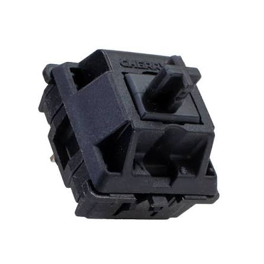

Архив свитчей
Свитч — это переключатель под каждой клавишей. Что это такое, можно почитать на Википедии.
Первый запатентованный механический переключатель Cherry MX:

| Свитч | Тип | Усилие, г |
|---|---|---|
| Cherry MX Black | Линейный | 67 |
| HMX Vintage Citrus | Линейный | 63.5 |
| SWK Neon | Линейный | 68 |
| HMX White Fox v2 | Линейный | 63.5 |
| WS Silent Linear | Линейный | 57 |